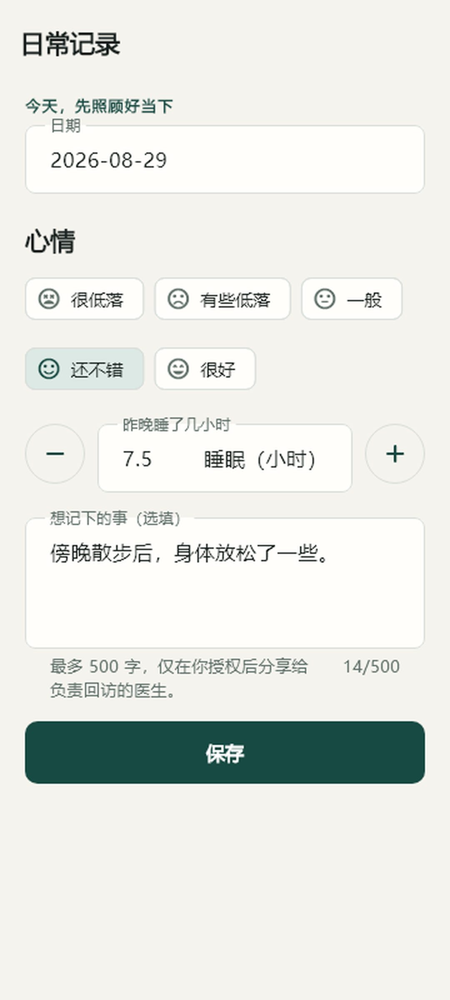
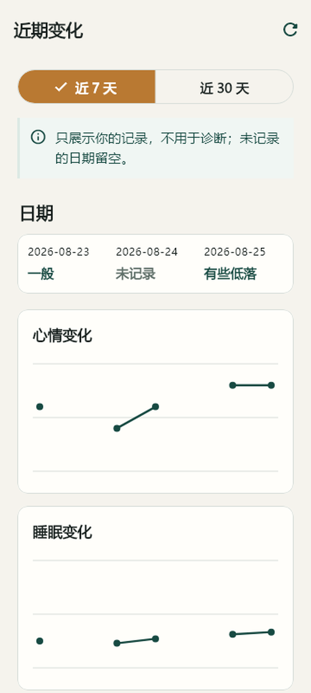
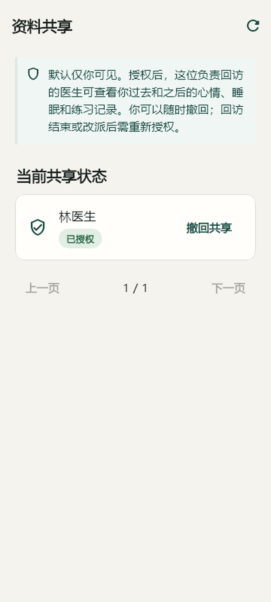
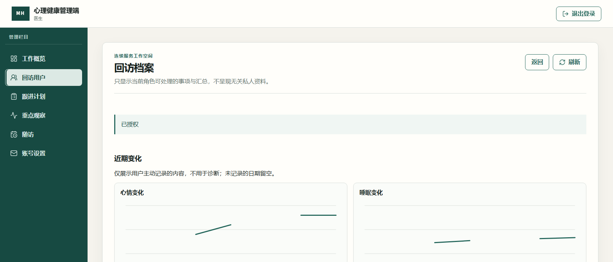
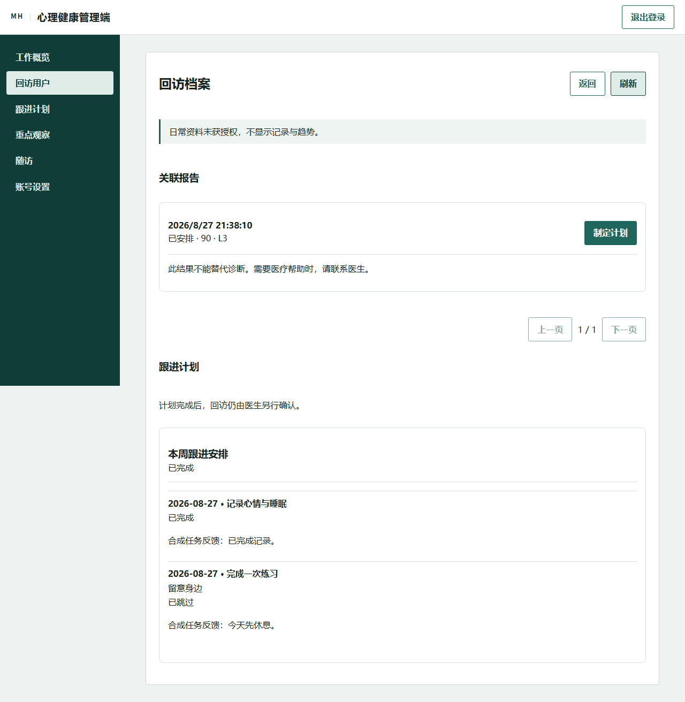

项目骨架与实时实验
建立 .NET、管理端、Flutter 和本地依赖；验证 SignalR、WebRTC、摄像头、TTS 与短视频编码。
12 commits从本地实验到日常记录、咨询报告、医生回访和跟进任务
项目从 8 月 22 日开始搭建。到 8 月 28 日，主分支共有 49 个提交；8 月 29 日继续在独立工作树中调整 Android 和管理端界面。本文按时间记录设计、编码、测试、排错和版本变化。
仓库里只有一名可核实的 Git 作者。工具协作参与了代码修改、测试执行、截图和文档整理，但不替代项目负责人作产品决定。
确定产品方向、实施计划、视觉偏好及 Git 写入授权。
49 个主分支提交均使用 jimmy <jimmy@visualsoft.cn>。
根据已确认计划改代码、跑测试、整理证据；不伪造作者和审批人。
先明确普通成年用户、本地演示、合成资料和不做诊断。
后端权限、客户端流程、管理端工作台逐步推进。
提交号、测试数量、错误信息、截图和产物哈希一并保留。
Docker 集成测试和 Flutter 宿主波动均单列，不用局部通过覆盖。
建立 .NET、管理端、Flutter 和本地依赖；验证 SignalR、WebRTC、摄像头、TTS 与短视频编码。
12 commits补用户、咨询、报告、文件和回访基础能力，并扩大契约与集成测试。
7 commits接入规则驱动问答、离线数字人、结果页、复核、重点观察和回访管理。
24 commits完成短信登录界面和本地模拟流程，保留真实网关接入边界。
4 commits加入心情、睡眠、练习、共享授权、医生档案、计划任务和反馈。
1 commit生成并提交产品封面，合并至主分支；网页 PPT 保持 10 页。
1 commit在独立工作树中调整 Android 与管理端视觉、响应式布局和中文文案。
未提交前两轮没有先做大而全的页面，而是验证浏览器与移动端最容易失败的部分：实时连接、音视频、摄像头、语音播报和媒体文件。
开发环境补上探测 Hub，解决初始 404。
增加网络状态权限，修复原生进程退出。
生成 1 秒 H.264/AAC 样片，证明本地编码链可用。
服务提供者契约在首轮全部通过。
| 检查项 | 结果 | 用途 |
|---|---|---|
| 单元测试 | 58 | 领域规则与应用服务 |
| 契约测试 | 64 | 接口请求、响应与错误格式 |
| 集成测试 | 5 | 数据库与真实中间件路径 |
| .NET 构建 | 0 error / 0 warning | 解决方案可编译 |
身份、咨询、报告、文件和回访先落到同一套 .NET 分层中。前端只读取已授权资源，不能靠菜单隐藏代替后端检查。
文字、视频、文件上传和咨询状态逐步接入。每次新增能力都同时增加契约测试，避免客户端自己猜接口。
数字对应实时咨询阶段的已记录结果。
c812458补齐 RTC 与上传链路a60b04c保护并清除合成资料使用固定规则和版本化配置回答演示问题，不调用真实模型，也不把日常记录换算成心理评分。
分析任务、报告状态和离线数字人使用合成资料。结果页保留安全提示和求助入口。
同一事务里连续保存两个版本时触发唯一约束。修复后改为一次事务内完成版本切换，并补回归测试。
所有结论只用于比赛演示，不替代医生判断，也不声称实时监测。
报告、复核、重点观察和回访不是独立演示页，而是同一条工作记录。医生只能处理自己负责的回访，运营端只看数量和状态。
数字顺序为单元测试 / 契约测试 / 集成测试。
保留手机号、验证码、重新发送和错误提示。比赛演示使用隔离测试凭据，不触发未经授权的真实短信。
把验证码错误、倒计时和重新发送放在同一张表单里，避免用户在多个页面之间来回跳。联系邮箱仍放在“我的”里。
c2a861b短信登录界面与本地流程通知依赖要求 core library desugaring，初次 Debug 构建失败。
处理在 Gradle 中开启 desugaring 并固定依赖，随后重新构建。
新增心情、睡眠、备注、练习、共享授权、医生档案和跟进任务。咨询师和运营不能读取这些私人资料。
01只能授权当前回访负责人。
02回访改派后，旧医生立即失去访问权。
03新医生必须重新获得授权。
04撤回授权不删除已发布的跟进任务。
05跟进任务接口不能反向读取私人备注。
每天最多一条，可修改、删除；7 天和 30 天趋势保留缺失日期。
从列表进入咨询室、分析进度或结果页，不再手输咨询编号。
授权页面写明会包含历史和后续记录。
指定记录或练习任务、到期日期；发布后内容不直接改写。
提交反馈，重复提交不能创建重复任务。
计划完成不会自动完成回访，医生仍按原流程处理。
b8870ed日常记录、共享、档案与跟进计划四个回访接口只按角色判断，没有同时核对当前负责人和分配版本。
修复：每次查询都校验当前负责人。客户端拼出的照护接口少了 /api/v1/，本地请求返回 404。
旧授权与新版本规则冲突，医生档案看不到趋势。
修复：通过正式接口撤回并重新授权。默认集成测试连接到过期 runtime socket，容器初始化失败。
处理：保留失败结果，改用本机隔离环境做完整流程。生成 16:9 产品封面，纳入仓库；网页 PPT 保持 10 页结构和演讲功能。
73e1e97 已包含封面提交。后续客户端体验优化从该提交建立独立工作树。
7699698663B24F84A06AF395DC84E8E54F2B7AEEBFDB3D2EF21D33D2EFEE36B4在 feature/client-experience-refresh 中统一 Android 与管理端的色彩、排版、状态反馈和响应式布局。API、权限、分页和错误格式保持不变。
| 范围 | 结果 | 说明 |
|---|---|---|
| .NET 单元测试 | 143 / 143 | 全部通过 |
| 内容契约测试 | 96 / 96 | 全部通过 |
| 默认集成测试 | 13 通过 / 123 初始化失败 | Testcontainers runtime socket 过期 |
| 管理端测试 | 36 / 36 | 单 worker；生产构建通过 |
| Flutter 静态分析 | 通过 | 无分析错误 |
| Flutter 全量宿主 | 53 完成 / 3 未完成 | 三个用例出现 did not complete |
| Flutter 单文件补跑 | 登录 4 / 4；首页 1 / 1 | 趋势与计划重点用例通过 |
| Android Debug APK | 构建成功 | 文件 242,592,686 bytes |
图中数据来自各阶段保留的测试记录。不同阶段的测试集合并非完全相同，适合观察覆盖增长，不适合当作性能指标。



在 Android API 36 上检查。当前记录没有发现横向溢出；测试后恢复设备设置。


| 日期 | 提交 | 新增 | 删除 | 主要工作 |
|---|---|---|---|---|
| 08.22 | 12 | 36,930 | 182 | 骨架、实时实验、媒体链 |
| 08.24 | 7 | 55,360 | 134 | 身份、咨询、报告、文件 |
| 08.25 | 24 | 11,010 | 1,705 | 规则问答、分析、复核、回访 |
| 08.26 | 4 | 582 | 75 | 短信登录 |
| 08.27 | 1 | 8,679 | 237 | 日常记录、授权、计划 |
| 08.28 | 1 | 42 | 0 | 封面与展示材料 |
统计来自主分支提交差异。8 月 29 日的体验优化尚未提交，因此不计入表格。
dcba07f项目骨架c812458RTC 与上传a60b04c合成资料保护c2a861b短信登录b8870ed持续跟进功能73e1e97封面进入主分支没有同步会议录音可供引用。以下内容来自用户确认的实施计划、后续指令和代码结果，可视为本项目的异步评审记录。
心情、睡眠和练习只用于本人回顾与回访沟通，不生成诊断分数。
只有当前负责回访的医生可以被授权；撤回和改派立即收回访问权。
代码实现、提交、推送、PR 和合并分别处理，不能因为功能完成就自动推送。
只组合现有查询结果，保留权限、状态值、分页和错误格式。
页面文案从 JSON 生成到 Dart 和 TypeScript，避免两端各写一套。
| 现象 | 原因 | 处理结果 |
|---|---|---|
| SignalR 404 | 开发环境没有映射探测 Hub | 补 Hub 路由并回归 |
| WebRTC 原生退出 | 缺少网络状态权限 | 补 Manifest 权限 |
| EF 包版本冲突 | 10.0.4 与 10.0.11 混用 | 统一固定为 10.0.11 |
| Windows 文件删除失败 | 文件句柄不允许删除共享 | 使用 FileShare.Delete |
| 规则版本唯一键冲突 | 一次事务内两次保存 | 合并版本切换 |
| Android 通知构建失败 | 缺少 desugaring | 开启并固定依赖 |
| 医生访问范围过宽 | 只查角色，未查负责人 | 核对负责人和分配版本 |
| Flutter 宿主卡住 | 全量运行出现波动 | 单 worker 与单文件补跑，保留原失败 |
| Docker 集成测试初始化失败 | runtime socket 过期 | 未做破坏性修复，列为阻塞 |
dotnet test MentalHealth.slnxnpm test -- --run --pool=threads --maxWorkers=1npm run buildflutter analyzeflutter test --concurrency=1flutter build apk --debugCB215471BA8F03A4A32934E75B50985690CCBFB762A1AC96B3856AB2A5D9A96F
7699698663B24F84A06AF395DC84E8E54F2B7AEEBFDB3D2EF21D33D2EFEE36B49FDCAE8BF5BFCA5ED38C544FE70E72B5CA030D6A74B338E9AD0CE3D5F360E0DABA83EEB4ECA12050A8A589A524CDC2E1846EBC310A7E2516A6A10CEDF739E9ABD1E01E9E55A3A688BDEE5B395605C2567B4E32F4290400A1C31A4102652BFA748420FFC165F89DD613FED8CE8D50555C309F00BC58BA26AC8D3CBE6B88972996E7D52866A4FD0E5406EDA38A51D8D1D8AE55A7FD5A4E6FFAEE761A9A498C1052哈希为 SHA-256。截图均来自仓库中的本地证据文件。
登录、每日记录、趋势、练习、咨询、报告、共享授权、计划任务和反馈。
查看本人负责的回访、授权范围内的档案、计划执行情况和反馈。
从本人咨询列表进入文字、视频或报告页面。
查看咨询量和回访状态汇总，不接触私人正文或个体评分。
截至 2026 年 8 月 29 日，体验优化仍在独立工作树中，尚未提交、推送、创建 PR 或合并。